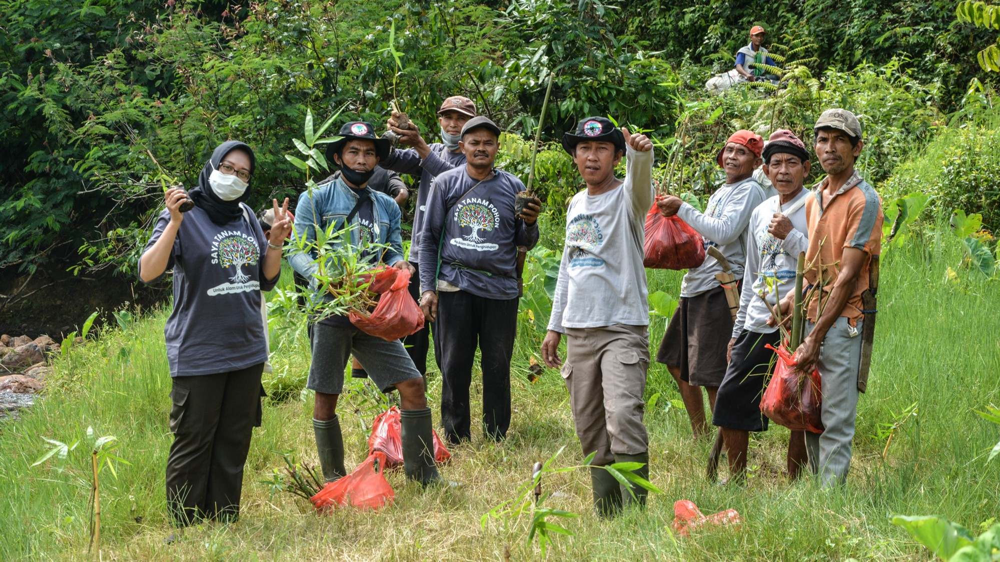
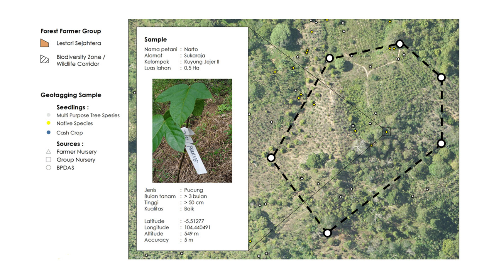
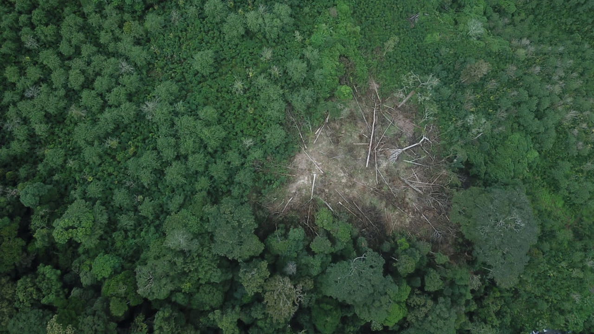

Pengelolaan hutan merupakan hal yang sangat penting bagi kelestarian dan keberadaan Hutan,
salah satu program pengelolaan hutan berbasis masyarakat adalah hutan kemasyarakatan. Merupakan bagian dari skema perhutanan sosial yang bertujuan untuk meningkatkan kesejahteraan masyarakat sekitar hutan.




